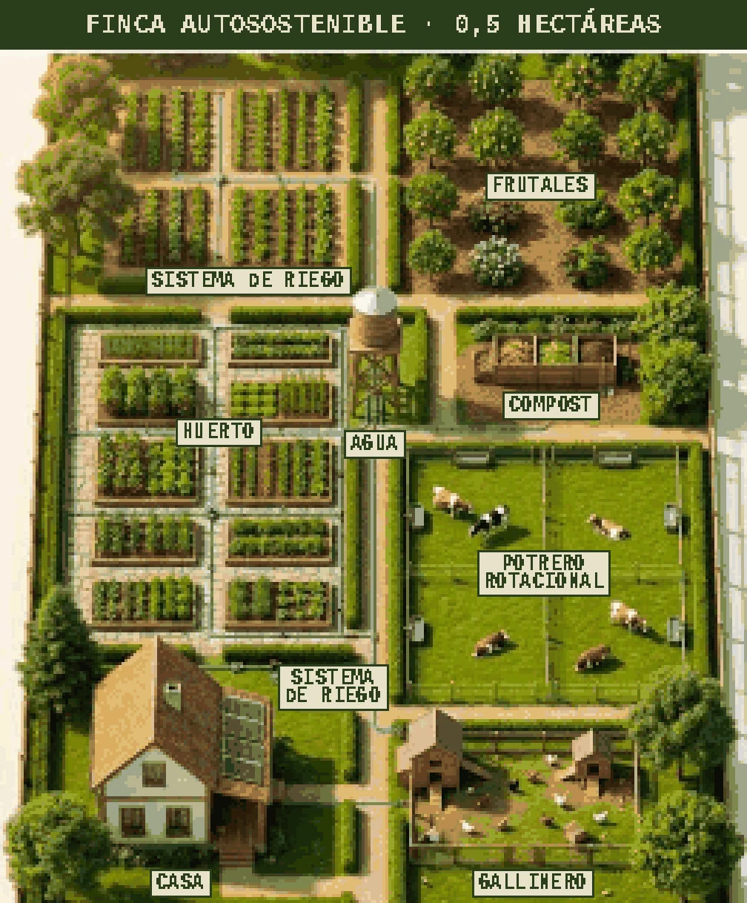
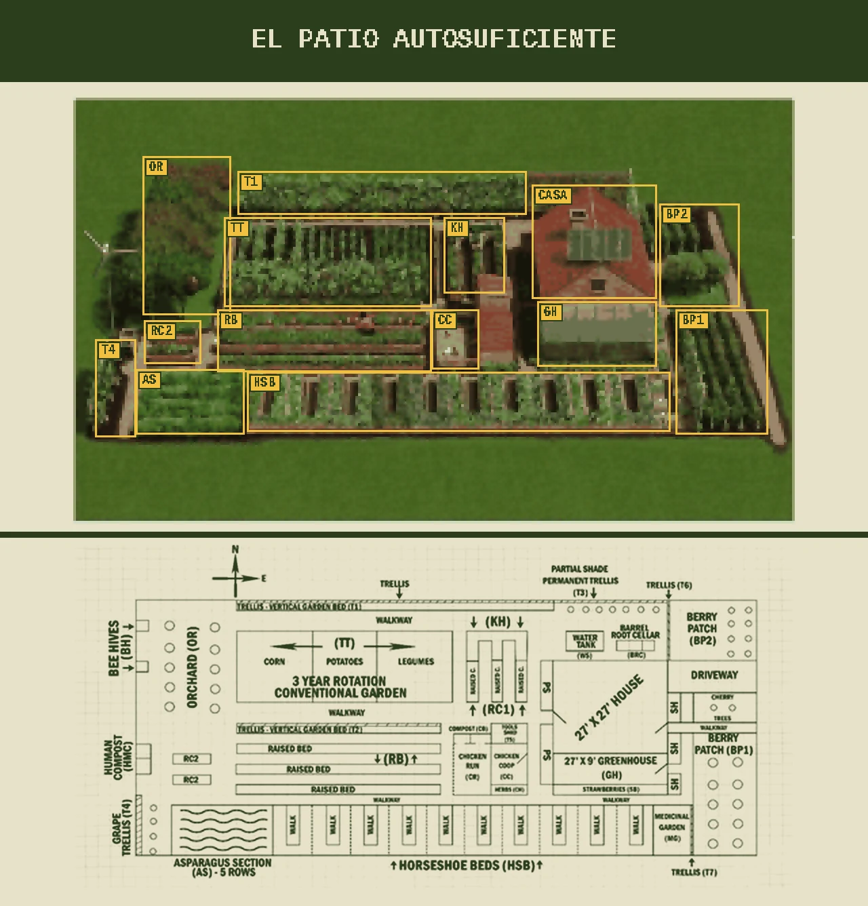

9.1 Construcción y Finca
Una finca autosuficiente no es una casa con huerto: es un sistema en el que cada zona alimenta a la siguiente. El gallinero da abono al compost, el compost al huerto y los restos del huerto vuelven a las gallinas. Con 0,5 hectáreas (5.000 m²) bien organizadas, una familia puede producir buena parte de su verdura, fruta y huevos, y algo de carne; no es una garantía de autosuficiencia total, porque depende del clima, el suelo, el agua y la experiencia.

Zonas de una finca de 0,5 ha
| Zona | Superficie orientativa | Para qué | Claves |
|---|---|---|---|
| Casa | 100–150 m² + entorno | Vivienda, almacén, energía | Fachada principal y tejado al sur para placas solares y luz; cerca del huerto y el gallinero, que se visitan a diario. El tejado también capta lluvia |
| Huerto | 500–1.000 m² en bancales | Verdura todo el año | Rotación de cultivos, pasillos fijos para no pisar la tierra, al sol y junto al agua (ver Agricultura de emergencia) |
| Sistema de riego | Toda la finca | Llevar agua a huerto, frutales y bebederos | Goteo con programador y filtro de malla: gasta un 30–50 % menos que la aspersión |
| Depósito de agua elevado | 5.000–20.000 L | Reserva y presión sin bomba | Cada metro de altura da ≈0,1 bar (un depósito a 10 m da ≈1 bar). Se llena desde pozo, lluvia o río |
| Frutales | 1.000–1.500 m² (20–40 árboles) | Fruta, frutos secos, sombra y cortavientos | Marco de 4–5 m entre árboles; mezclar variedades tempranas y tardías para cosechar meses seguidos. Plantarlos lo primero: tardan 3–5 años en producir |
| Compost | 10–20 m² | Abono gratis | 3 cajones (fresco, madurando y listo); 1 parte de verde por 2–3 de marrón (hojas, paja, cartón), húmedo como una esponja escurrida y volteado cada pocas semanas |
| Potrero rotacional | 1.500–2.500 m² en 4–6 parcelas | Pasto para 2–4 cabras u ovejas | Mover los animales de parcela cada pocos días evita el sobrepastoreo y corta el ciclo de los parásitos; agua y sombra en cada parcela |
| Gallinero | 20–50 m² + parque | Huevos, carne, abono y control de plagas | Al menos 4–5 m² de parque por gallina, 1 nido cada 4–5 gallinas, palos para dormir y cerrado de noche contra zorros y garduñas |
Estas superficies son un punto de partida, no un plano universal: empieza por el relieve, el agua y la orientación, y deja un 10–20 % de reserva para crecer (leñera, vivero, taller de 15–40 m², caminos que no se embarren).
Diseño por zonas: cerca lo que usas a diario
| Zona | Qué va | Frecuencia |
|---|---|---|
| 0 · Casa | Vivienda, cocina, despensa y taller | Continua |
| 1 · Junto a la casa | Aromáticas, semilleros, huerto intensivo, depósito de uso diario, invernadero adosado | Varias veces al día |
| 2 · Cerca | Huerto principal, compost, gallinero, pequeños corrales | Diaria |
| 3 · Media distancia | Frutales, vivero, leñera, almacén, pastos rotacionales | Semanal |
| 4 · Lejos | Arbolado para leña, cortavientos, depósitos secundarios | Ocasional |
| 5 · Silvestre | Monte sin intervenir: biodiversidad y recarga de agua | Casi nunca |
Es el principio de la permacultura: una finca que funciona bien no solo produce, también ahorra pasos.
Agua: la infraestructura prioritaria
Antes de plantar o construir corrales, resuelve el agua con varias fuentes: red, lluvia, pozo legalizado, manantial si es legal y sanitario, depósitos, filtros y la opción de acarrearla a mano. Separa los circuitos de agua potable, higiene, animales, riego e incendios: si uno falla o se contamina, los demás siguen. Un depósito elevado da presión sin bomba (≈0,1 bar por metro, menos las pérdidas de tubos y filtros) y sigue dando agua aunque falle la bomba.
Captación de lluvia: litros al año ≈ m² de tejado × mm de lluvia × 0,8. Por ejemplo, 100 m² con 500 mm dan unos 40.000 L/año. Necesita canalones, filtro de hojas, desviador de primeras aguas, depósito opaco con tapa y malla antimosquitos, rebosadero y acceso para limpiar. Úsala para riego y limpieza; para beber, potabilízala (ver 1.1).
El patio autosuficiente: cómo leer el plano
Un diseño clásico de "self-sufficient backyard" que concentra en una parcela pequeña casi todos los elementos de una finca. En la vista 3D, cada zona está recuadrada en amarillo con la misma sigla que en el plano de abajo:

| Elemento (sigla en el plano) | Qué es y para qué sirve |
|---|---|
| Huerto en rotación de 3 años (TT) | Maíz, patata y legumbres cambian de parcela cada año para no agotar el suelo y cortar plagas; las legumbres, junto a bacterias de sus raíces, enriquecen el suelo en nitrógeno |
| Bancales elevados (RB) | Tierra suelta que se calienta antes en primavera, drena bien y se trabaja sin agacharse tanto |
| Bancales en herradura (HSB) | Bancales en forma de U: se llega a todo desde el pasillo central sin pisar la tierra |
| Bancales de cerradura (KH, "keyhole") | Bancal con un hueco de acceso y un cesto de compost en el centro que va alimentando a las plantas de alrededor |
| Frutales (OR) y cerezo | Fruta fresca y para conservar; en la parte norte para no dar sombra al huerto |
| Frutos rojos (BP1, BP2) y fresas (SB) | Frambuesa, arándano, grosella y fresa: mucha producción en poco espacio |
| Espárragos (AS) | Cultivo perenne: se planta una vez y produce durante 15–20 años |
| Espalderas y emparrado (T1–T7, uva T4) | Cultivo en vertical (uva, judías, pepino, kiwi) para aprovechar paredes y bordes; la espaldera en semisombra (T3) sirve para lo que no aguanta pleno sol |
| Colmenas (BH) | Polinización del huerto y frutales, miel y cera; en un borde, lejos de caminos y de la casa |
| Compost (HMC, CB) | Varias composteras repartidas para tenerlas cerca de donde se usa el abono |
| Bancales pequeños (RC1, RC2) | Bancales elevados cortos para semilleros, aromáticas o cultivos rápidos |
| Gallinero y corral (CC, CR) | Gallinas junto al huerto: se comen los restos y devuelven abono |
| Invernadero (GH) | Semilleros y cultivos fuera de temporada; adosado a la casa, aprovecha y aporta calor |
| Depósito de agua (WT) y bodega en barril (BRC) | Agua de lluvia del tejado y un barril enterrado que funciona como mini bodega de raíces (ver Conservación de alimentos) |
| Huerto medicinal (MG) y hierbas | Aromáticas y plantas medicinales cerca de la cocina |
| Caseta de herramientas (TS) y aerogenerador / placas | Herramientas a mano en el centro del huerto; energía propia en el tejado y en un poste alejado de árboles |
Cómo elegir el terreno
| Factor | Qué comprobar |
|---|---|
| 1. Agua | Cantidad, calidad, si se seca en verano y profundidad del acuífero. En España, un pozo existente no es legal por estar ahí: comprueba su situación en la Confederación Hidrográfica y el ayuntamiento antes de comprar |
| 2. Inundaciones | Mapas oficiales de zonas inundables (SNCZI del Ministerio) y observación en persona de cauces, barrancos, puntos bajos y marcas de agua. Una parcela barata en zona inundable sale cara (ver 2.3) |
| 3. Orientación y relieve | Exposición al sur para casa, huerto y placas, y protección del viento dominante. Una ligera pendiente ayuda al drenaje y al riego por gravedad; una fuerte complica la obra y los accesos |
| 4. Suelo | Un análisis barato: pH (ideal 6–7,5), textura, materia orgánica (mejor más del 3 %), nutrientes y salinidad. Haz catas para ver la profundidad real y si hay roca o capas compactadas |
| 5. Acceso | Visita la finca también en invierno o tras días de lluvia: el camino de verano puede ser un barrizal. Debe poder entrar un camión de bomberos |
| 6. Riesgos naturales | Incendio forestal, sequía, heladas, viento, desprendimientos y erosión. La mejor finca es la que empieza con menos vulnerabilidades, no con más instalaciones |
| 7. Legalidad urbanística | En suelo rústico, comprar no da derecho a construir. Pide un informe o certificado urbanístico al ayuntamiento antes de comprar y revisa clasificación del suelo, parcela mínima (varía mucho según comunidad), usos y edificabilidad permitidos, retranqueos, protección ambiental, afecciones de aguas, servidumbres y que coincidan Registro y Catastro |
Orden de montaje
| Fase | Qué |
|---|---|
| 1. Conocer | Agua, suelo, orientación, accesos, riesgos y normativa: un año observando vale más que una obra precipitada |
| 2. Lo básico | Acceso, drenaje, agua, saneamiento, refugio habitable y protección contra incendios |
| 3. Reservas | Depósitos, despensa, herramientas, repuestos, combustible, botiquín e iluminación |
| 4. Energía | Solar, baterías, distribución e iluminación de emergencia (ver 5.2) |
| 5. Producción lenta | Frutales y perennes cuanto antes: tardan 3–5 años en producir |
| 6. Producción rápida | Huerto, semilleros, invernadero y cultivos de almacenamiento (patata, cebolla, ajo, calabaza, legumbre seca; ver 1.5) |
| 7. Animales | Solo con agua, comida para la peor época del año, refugio, gestión del estiércol y veterinario resueltos. No dimensiones los animales por los metros, sino por lo que la finca produce en invierno o en sequía |
| 8. Taller | Capacidad propia para reparar tuberías, estructuras, herramientas e instalaciones (ver 9.2) |
Sistemas constructivos
No hay un sistema mejor para todo: depende del clima, el presupuesto, la mano de obra, la normativa y los materiales locales.
| Sistema | Ventajas | Inconvenientes | Cuándo interesa |
|---|---|---|---|
| Ladrillo / bloque | Conocido por cualquier albañil, duradero, resistente al fuego, materiales en todas partes | Lento; mala inercia y aislamiento si no lleva aislamiento continuo (SATE o cámara con lana mineral) | Construcción convencional |
| Hormigón | Resistente y versátil | Mucha energía en su fabricación; necesita encofrado y maquinaria | Cimentaciones, zócalos, aljibes |
| Madera (entramado ligero) | Obra seca y rápida, buen aislamiento, se puede autoconstruir | Necesita protección de humedad, carcoma y fuego, y mantenimiento | Autoconstrucción, ampliaciones |
| Piedra | Muy duradera, gran inercia térmica, material local | Muy lenta y pesada; aísla poco por sí sola | Rehabilitar construcciones rurales |
| Tierra (adobe, tapial, BTC) | Barata, con la tierra del propio terreno; regula temperatura y humedad | Teme el agua: necesita buen zócalo de piedra u hormigón y aleros amplios | Climas secos y diseños adaptados |
| Balas de paja | Aislamiento excelente (λ ≈ 0,05 W/m·K) y residuo agrícola barato | Revoque continuo de cal o barro de 3–5 cm contra fuego, roedores y humedad; pocos profesionales | Viviendas de muy bajo consumo |
| Contenedor marítimo | Estructura rápida, robusta y transportable | Horno en verano y nevera en invierno: aislamiento grueso, condensación, óxido y cortes complicados | Almacén o taller; como vivienda, solo bien aislado |
| Prefabricada / modular | Plazos cortos y precio cerrado | Depende de fábrica y transporte; poca personalización | Cuando el tiempo de obra manda |
El aislamiento importa más que el material de moda. Por orden: orientación → aislamiento → estanqueidad → protección solar (aleros, persianas) → ventilación → masa térmica → calefacción eficiente → producción de energía. Una casa que necesita poca energía es mucho más fácil de mantener en un corte largo.
Construir para reparar
- Medidas y piezas estándar, evitando componentes propietarios si hay alternativa
- Llaves de corte independientes por zona y válvulas accesibles
- Tuberías y cables etiquetados, un plano de la instalación y los manuales guardados
- Repuestos de lo que más falla: juntas, filtros, fusibles, correas, abrazaderas
| Sistema crítico | Principal | Alternativa | Manual |
|---|---|---|---|
| Agua | Bomba | Depósito por gravedad | Acarreo con garrafas |
| Electricidad | Solar + baterías | Generador | Linternas y pilas |
| Cocina | Cocina principal | Hornillo de gas | Fuego de leña |
| Comunicación | Internet y móvil | Radio y walkies | Vecinos e información local |
| Comida | Huerto y animales | Despensa | Conservas y secado |
Protección contra incendios
En zona forestal, la gestión de la vegetación protege más que cualquier aparato: mantén una franja de protección desbrozada alrededor de las edificaciones (habitualmente 25–30 m; consulta la norma de tu comunidad), sin leña, pinocha ni ramas tocando el tejado, y con el combustible almacenado lejos de la casa. Ten extintores, detectores de humo y CO, depósito y mangueras, una instalación eléctrica bien hecha, acceso para bomberos y dos vías de evacuación. No cuentes con apagar un incendio forestal con tu agua: la prioridad es que no empiece y poder irte a tiempo.
Mantenimiento: más importante que construir
| Cada | Revisar |
|---|---|
| Semana | Agua y depósitos, animales, cultivos, bombas y filtros, accesos |
| Mes | Tejados y canalones, herramientas, baterías, cerraduras y vallado, reservas |
| Temporada | Limpiar canalones y drenajes, podas, instalación eléctrica, caminos, sistemas contra incendios |
| Año | Documentación, inventarios, caducidades, simulacro de emergencia, árboles y estructuras, y qué falló y por qué |